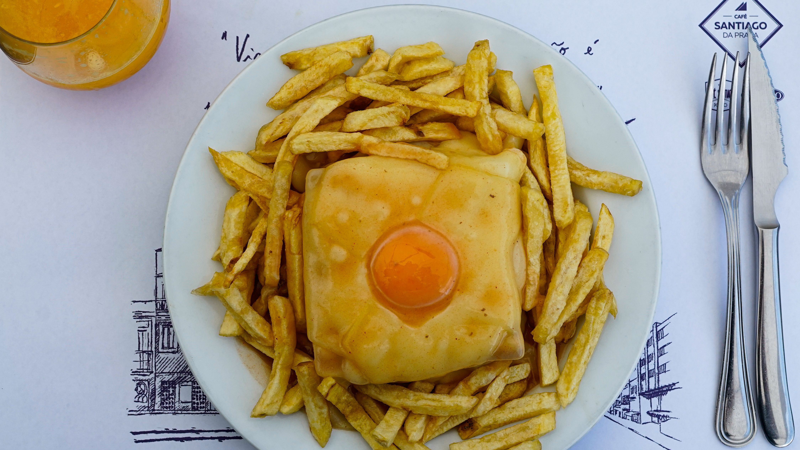

Go back to the main page
Francesinha - Porto's culinary symbol

Photograph taken by Matheus De Moraes Gugelmim over on pexels
The francesinha is a sandwich from the city Porto, highly regarded for its taste. It consists of two to three slices of toasted bread, an assortment of meats such as pork, ham, linguiça and sausage, topped up with melted slices of cheese and a special sauce characteristic from the region, together with a fried egg. Often is served with a portion of french fries.
The Little French Woman was created in the 50's by the cook Daniel David da Silva, as an attempt to recreate the french toast croque-monsieur, changing the original ingredients with a mix of meats consumed in portugal, mixed with a spicy sauce consisting of beer and tomato, sometimes mixed with wine from Porto.
Over the years people developed variations of this dish, such as a vegan option, shrimp, chicken meat or even kebab.
Ingredients
For the sandwich
Note: For the sake of simplicity, this recipe will use two slices of toasted bread instead of three.
- 2 Slices of toasted bread
- 1 slice of ham
- 1 hotdog sausage
- 1 steak
- 4 slices of cheese
- 1 egg
- 1 tbsp of olive oil
- 1 tsp of butter
- Black pepper to taste
- 1/2 tsp of salt
For the sauce
- 1 tbsp of olive oil
- 1 small onion
- 1 garlic clove
- 1/2 of a malageta pepper
- 1 bay leaf
- 1/2 can of diced naked tomatoes
- 100ml of beer
- 50ml white wine
- 100ml+ to taste of water
- 1 tsp of Worcestershire sauce
- 1 cube of steak stock
- 1/2 tsp of salt
- 1 tsp of corn starch
- 1 tsp of wine from Porto
Steps
- Toast the slices of bread. Cut the sausage in half lengthwise.
- Season the steak with salt and pepper. Heat a frying pan with the butter and fry the steak on both sides. Set aside.
- Assemble the francesinha in the following order: a slice of bread, ham, sausage, steak, another slice of bread, and then cover everything with cheese. Set aside.
- Sauté the chopped onion in olive oil. Add the chopped garlic, chilli pepper, and bay leaf.
- Add the tomatoes, beer, wine, water, Worcestershire sauce, and beef stock. Bring to a boil and simmer for 10 minutes. Season with salt.
- Add the cornflour (cornstarch) dissolved in cold water and stir well to combine. Finally, add the Port wine and let it boil for 5 minutes. Remove from the heat and blend with a hand blender until smooth.
- Pour 3 tablespoons of the sauce over the francesinha and place it under the grill/broiler at 180°C (350°F) for 5 minutes, until the cheese is melted and gratinated.
- Pour the remaining sauce over the francesinha.
- Fry the egg in a frying pan with the olive oil, then place it on top.